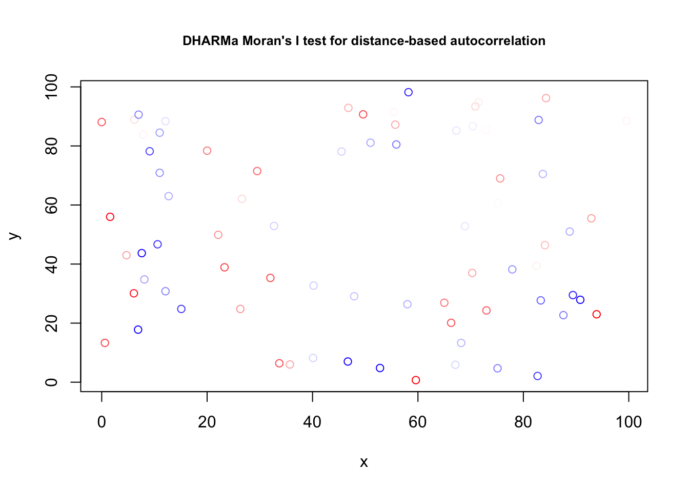

6 Correlation structures
This chapter explains how to model correlation structures in the residuals.
6.1 General Idea
Except for the random effects, we have so far assumed that observations are independent. We will now relax this assumption. As a motivation, you can skim the following paper from Roberts et al., 2016.

We have already discussed random effects, which is a grouped correlation. All of the other three correlation structures discussed here are different. They are distance-based correlations between data points. Distance is expressed, e.g., by:
- Spatial distance.
- Temporal distance.
- Phylogenetic distance.
For either of these structures, there can be two phenomena that lead to correlations:
- There can be a trend in the given space (e.g. time, space), which we have to remove first.
- After accounting for the trend, there can be a so-called autocorrelation between data points.
The idea of the so-called conditional autoregressive (CAR) structures is, that we make parametric assumptions for how the correlation between data points falls off with distance. Then, we fit the model with this structure.
Similar as for the variance modelling, we can add this structures
- either in
nlme::gls, see https://stat.ethz.ch/R-manual/R-devel/library/nlme/html/corClasses.html, - or in
glmmTMB, see https://cran.r-project.org/web/packages/glmmTMB/vignettes/covstruct.html.
The following pages provide examples and further comments on how to do this.
6.2 Temporal and Spatial Correlation Structures
In principle, spatial and temporal correlation are quite similar, there are 2 options we can have:
- There is a spatial trend in time / space, which creates a correlation in space / time.
- There truly is a spatial correlation, after accounting for the trend.
Unfortunately, the distinction between a larger trend and a correlation is quite fluid. Nevertheless, one should always first check for and remove the trend, typically by including time/space as a predictor, potentially in a flexible way (GAMs come in handy). After this is done, we can fit a model with a temporally/spatially correlated error.
Temporal correlation
As our first example, I look at the hurricane study from yesterday, which is, after all, temporal data. This data set is located in DHARMa.
library(glmmTMB)
library(DHARMa)
originalModelGAM = glmmTMB(alldeaths ~ scale(MasFem) *
(scale(Minpressure_Updated_2014) + scale(NDAM)),
data = hurricanes, family = nbinom2)
# Residual checks with DHARMa.
res = simulateResiduals(originalModelGAM)## Warning in TMB::openmp(parallel): OpenMP not supported.## Warning in TMB::openmp(n = n_orig): OpenMP not supported.## Warning in TMB::openmp(parallel): OpenMP not supported.## Warning in TMB::openmp(n = n_orig): OpenMP not supported.plot(res)# No significant deviation in the general plot, but try this, which was highlighted by
# https://www.theguardian.com/science/grrlscientist/2014/jun/04/hurricane-gender-name-bias-sexism-statistics
plotResiduals(res, hurricanes$NDAM)# We also find temporal autocorrelation.
res2 = recalculateResiduals(res, group = hurricanes$Year)
testTemporalAutocorrelation(res2, time = unique(hurricanes$Year))##
## Durbin-Watson test
##
## data: simulationOutput$scaledResiduals ~ 1
## DW = 2.5518, p-value = 0.04758
## alternative hypothesis: true autocorrelation is not 0A second example from Pinheiro and Bates, pp. 255-258. The data originates from Vonesh and Carter (1992), who describe data measured on high-flux hemodialyzers to assess their in vivo ultrafiltration characteristics. The ultrafiltration rates (in mL/hr) of 20 high-flux dialyzers were measured at seven different transmembrane pressures (in dmHg). The in vitro evaluation of the dialyzers used bovine blood at flow rates of either 200~dl/min or 300~dl/min. The data, are also analyzed in Littell, Milliken, Stroup and Wolfinger (1996).
See ?Dialyzer for explanation of the variables (data comes with the package nlme.{R}).
The data highlights the flexibility of gls for structured ( 1| subject) temporal data. Unfortunately, nlme.{R} does not interface with DHARMa.{R}.
library(nlme)
fm1Dial.gls = gls(rate ~(pressure + I(pressure^2) + I(pressure^3) + I(pressure^4))*QB,
data = Dialyzer)
plot(fm1Dial.gls)fm2Dial.gls = update(fm1Dial.gls, weights = varPower(form = ~ pressure))
plot(fm2Dial.gls)fm3Dial.gls = update(fm2Dial.gls, corr = corAR1(0.771, form = ~ 1 | Subject))
summary(fm3Dial.gls)## Generalized least squares fit by REML
## Model: rate ~ (pressure + I(pressure^2) + I(pressure^3) + I(pressure^4)) * QB
## Data: Dialyzer
## AIC BIC logLik
## 642.6746 679.9526 -308.3373
##
## Correlation Structure: AR(1)
## Formula: ~1 | Subject
## Parameter estimate(s):
## Phi
## 0.7526038
## Variance function:
## Structure: Power of variance covariate
## Formula: ~pressure
## Parameter estimates:
## power
## 0.5182386
##
## Coefficients:
## Value Std.Error t-value p-value
## (Intercept) -16.81845 1.050536 -16.009405 0.0000
## pressure 92.33424 5.266862 17.531167 0.0000
## I(pressure^2) -49.26516 6.995059 -7.042851 0.0000
## I(pressure^3) 11.39968 3.454779 3.299683 0.0012
## I(pressure^4) -1.01964 0.558637 -1.825226 0.0703
## QB300 -1.59419 1.598447 -0.997336 0.3205
## pressure:QB300 1.70543 7.757062 0.219855 0.8263
## I(pressure^2):QB300 2.12680 10.147281 0.209593 0.8343
## I(pressure^3):QB300 0.47971 4.968707 0.096547 0.9232
## I(pressure^4):QB300 -0.22064 0.799379 -0.276019 0.7830
##
## Correlation:
## (Intr) pressr I(p^2) I(p^3) I(p^4) QB300 p:QB30 I(^2):
## pressure -0.891
## I(pressure^2) 0.837 -0.959
## I(pressure^3) -0.773 0.895 -0.981
## I(pressure^4) 0.718 -0.838 0.946 -0.990
## QB300 -0.657 0.585 -0.550 0.508 -0.472
## pressure:QB300 0.605 -0.679 0.651 -0.608 0.569 -0.900
## I(pressure^2):QB300 -0.577 0.661 -0.689 0.676 -0.652 0.845 -0.960
## I(pressure^3):QB300 0.538 -0.622 0.682 -0.695 0.688 -0.780 0.898 -0.982
## I(pressure^4):QB300 -0.502 0.586 -0.661 0.692 -0.699 0.724 -0.840 0.947
## I(^3):
## pressure
## I(pressure^2)
## I(pressure^3)
## I(pressure^4)
## QB300
## pressure:QB300
## I(pressure^2):QB300
## I(pressure^3):QB300
## I(pressure^4):QB300 -0.990
##
## Standardized residuals:
## Min Q1 Med Q3 Max
## -2.44570115 -0.67381573 0.07715872 0.68039816 2.21585297
##
## Residual standard error: 3.046316
## Degrees of freedom: 140 total; 130 residualSpatial models
We will use a data set with thick densities and a spatial (soil) predictor. Read in data
spdata = read.table("https://stats.idre.ucla.edu/stat/r/faq/thick.csv",
header = T, sep = ",", row.names = 1)Fit the model:
library(DHARMa)
library(gstat)
plot(thick ~ soil, data = spdata)
fit = lm(thick ~ soil, data = spdata)
summary(fit)##
## Call:
## lm(formula = thick ~ soil, data = spdata)
##
## Residuals:
## Min 1Q Median 3Q Max
## -6.0414 -1.1975 0.0876 1.4836 4.9584
##
## Coefficients:
## Estimate Std. Error t value Pr(>|t|)
## (Intercept) 31.9420 3.1570 10.118 1.54e-15 ***
## soil 2.2552 0.8656 2.605 0.0111 *
## ---
## Signif. codes: 0 '***' 0.001 '**' 0.01 '*' 0.05 '.' 0.1 ' ' 1
##
## Residual standard error: 2.278 on 73 degrees of freedom
## Multiple R-squared: 0.08508, Adjusted R-squared: 0.07254
## F-statistic: 6.788 on 1 and 73 DF, p-value: 0.01111# Quantile residuals are not actually needed in this case but
# DHARMa includes a test for spatial autocorrelation which
# will save us coding time
res = simulateResiduals(fit)
testSpatialAutocorrelation(res, x = spdata$north, y = spdata$east)
##
## DHARMa Moran's I test for distance-based autocorrelation
##
## data: res
## observed = 0.210870, expected = -0.013514, sd = 0.021940, p-value <
## 2.2e-16
## alternative hypothesis: Distance-based autocorrelation# Looking also at the directional variogram
tann.dir.vgm = variogram(residuals(fit) ~ 1,
loc =~ east + north, data = spdata,
alpha = c(0, 45, 90, 135))
plot(tann.dir.vgm)
Remove trend via a GAM:
library(mgcv)
library(modEvA)
fit1 = gam(thick ~ soil + te(east, north) , data = spdata)
summary(fit1)##
## Family: gaussian
## Link function: identity
##
## Formula:
## thick ~ soil + te(east, north)
##
## Parametric coefficients:
## Estimate Std. Error t value Pr(>|t|)
## (Intercept) 39.68933 0.26498 149.780 <2e-16 ***
## soil 0.12363 0.07275 1.699 0.0952 .
## ---
## Signif. codes: 0 '***' 0.001 '**' 0.01 '*' 0.05 '.' 0.1 ' ' 1
##
## Approximate significance of smooth terms:
## edf Ref.df F p-value
## te(east,north) 21.09 22.77 721.3 <2e-16 ***
## ---
## Signif. codes: 0 '***' 0.001 '**' 0.01 '*' 0.05 '.' 0.1 ' ' 1
##
## R-sq.(adj) = 0.996 Deviance explained = 99.7%
## GCV = 0.033201 Scale est. = 0.022981 n = 75plot(fit1, pages = 0, lwd = 2)
col = colorRamp(c("red", "white", "blue"))(range01(residuals(fit1)))
plot(spdata$east, spdata$north, col = rgb(col, maxColorValue = 255) )
Almost the same, but simpler:
fit = lm(thick ~ soil + north + I(north^2), data = spdata)Alternatively, fit an autoregressive model. Of course, both options can be combined.
fit2 = gls(thick ~ soil , correlation = corExp(form =~ east + north) , data = spdata)
summary(fit2)## Generalized least squares fit by REML
## Model: thick ~ soil
## Data: spdata
## AIC BIC logLik
## 164.3474 173.5092 -78.17368
##
## Correlation Structure: Exponential spatial correlation
## Formula: ~east + north
## Parameter estimate(s):
## range
## 719.4121
##
## Coefficients:
## Value Std.Error t-value p-value
## (Intercept) 42.81488 5.314541 8.056176 0.0000
## soil 0.02662 0.199737 0.133289 0.8943
##
## Correlation:
## (Intr)
## soil -0.12
##
## Standardized residuals:
## Min Q1 Med Q3 Max
## -1.5811122 -0.7276873 -0.5028102 -0.2092991 0.3217326
##
## Residual standard error: 5.573087
## Degrees of freedom: 75 total; 73 residualfit1 = gls(thick ~ soil + north + I(north^2), data = spdata)
anova(fit1, fit2)## Model df AIC BIC logLik Test L.Ratio p-value
## fit1 1 5 278.7468 290.0602 -134.37340
## fit2 2 4 164.3474 173.5092 -78.17368 1 vs 2 112.3994 <.00016.3 Phylogenetic Structures (PGLS)
This is mostly taken from https://lukejharmon.github.io/ilhabela/instruction/2015/07/03/PGLS/. The two datasets associated with this example are in the EcoData package.
Perform analysis:
library(EcoData)
library(ape)
library(geiger)
library(nlme)
library(phytools)
library(DHARMa)To plot the phylogenetic tree, use
plot(anolisTree)Regress species traits
# Check whether names are matching in both files.
name.check(anolisTree, anolisData)## $tree_not_data
## [1] "ahli" "alayoni" "alfaroi" "aliniger"
## [5] "allisoni" "allogus" "altitudinalis" "alumina"
## [9] "alutaceus" "angusticeps" "argenteolus" "argillaceus"
## [13] "armouri" "bahorucoensis" "baleatus" "baracoae"
## [17] "barahonae" "barbatus" "barbouri" "bartschi"
## [21] "bremeri" "breslini" "brevirostris" "caudalis"
## [25] "centralis" "chamaeleonides" "chlorocyanus" "christophei"
## [29] "clivicola" "coelestinus" "confusus" "cooki"
## [33] "cristatellus" "cupeyalensis" "cuvieri" "cyanopleurus"
## [37] "cybotes" "darlingtoni" "distichus" "dolichocephalus"
## [41] "equestris" "etheridgei" "eugenegrahami" "evermanni"
## [45] "fowleri" "garmani" "grahami" "guafe"
## [49] "guamuhaya" "guazuma" "gundlachi" "haetianus"
## [53] "hendersoni" "homolechis" "imias" "inexpectatus"
## [57] "insolitus" "isolepis" "jubar" "krugi"
## [61] "lineatopus" "longitibialis" "loysiana" "lucius"
## [65] "luteogularis" "macilentus" "marcanoi" "marron"
## [69] "mestrei" "monticola" "noblei" "occultus"
## [73] "olssoni" "opalinus" "ophiolepis" "oporinus"
## [77] "paternus" "placidus" "poncensis" "porcatus"
## [81] "porcus" "pulchellus" "pumilis" "quadriocellifer"
## [85] "reconditus" "ricordii" "rubribarbus" "sagrei"
## [89] "semilineatus" "sheplani" "shrevei" "singularis"
## [93] "smallwoodi" "strahmi" "stratulus" "valencienni"
## [97] "vanidicus" "vermiculatus" "websteri" "whitemani"
##
## $data_not_tree
## [1] "1" "10" "100" "11" "12" "13" "14" "15" "16" "17" "18" "19"
## [13] "2" "20" "21" "22" "23" "24" "25" "26" "27" "28" "29" "3"
## [25] "30" "31" "32" "33" "34" "35" "36" "37" "38" "39" "4" "40"
## [37] "41" "42" "43" "44" "45" "46" "47" "48" "49" "5" "50" "51"
## [49] "52" "53" "54" "55" "56" "57" "58" "59" "6" "60" "61" "62"
## [61] "63" "64" "65" "66" "67" "68" "69" "7" "70" "71" "72" "73"
## [73] "74" "75" "76" "77" "78" "79" "8" "80" "81" "82" "83" "84"
## [85] "85" "86" "87" "88" "89" "9" "90" "91" "92" "93" "94" "95"
## [97] "96" "97" "98" "99"# Plot traits.
plot(anolisData[, c("awesomeness", "hostility")])
plot(hostility ~ awesomeness, data = anolisData)
fit = lm(hostility ~ awesomeness, data = anolisData)
summary(fit)##
## Call:
## lm(formula = hostility ~ awesomeness, data = anolisData)
##
## Residuals:
## Min 1Q Median 3Q Max
## -0.7035 -0.3065 -0.0416 0.2440 0.7884
##
## Coefficients:
## Estimate Std. Error t value Pr(>|t|)
## (Intercept) 0.10843 0.03953 2.743 0.00724 **
## awesomeness -0.88116 0.03658 -24.091 < 2e-16 ***
## ---
## Signif. codes: 0 '***' 0.001 '**' 0.01 '*' 0.05 '.' 0.1 ' ' 1
##
## Residual standard error: 0.3807 on 98 degrees of freedom
## Multiple R-squared: 0.8555, Adjusted R-squared: 0.8541
## F-statistic: 580.4 on 1 and 98 DF, p-value: < 2.2e-16abline(fit)Check for phylogenetic signal in residuals.
# Calculate weight matrix for phylogenetic distance.
w = 1/cophenetic(anolisTree)
diag(w) = 0
Moran.I(residuals(fit), w)## $observed
## [1] 0.05067625
##
## $expected
## [1] -0.01010101
##
## $sd
## [1] 0.00970256
##
## $p.value
## [1] 3.751199e-10Conclusion: signal in the residuals, a normal lm will not work.
You can also check with DHARMa, using this works also for GLMMs
res = simulateResiduals(fit)
testSpatialAutocorrelation(res, distMat = cophenetic(anolisTree))##
## DHARMa Moran's I test for distance-based autocorrelation
##
## data: res
## observed = 0.0509093, expected = -0.0101010, sd = 0.0097304, p-value =
## 3.609e-10
## alternative hypothesis: Distance-based autocorrelationAn old-school method to deal with the problem are the so-called Phylogenetically Independent Contrasts (PICs) (Felsenstein, J. (1985) “Phylogenies and the comparative method”. American Naturalist, 125, 1–15.). The idea here is to transform your data in a way that an lm is still appropriate. For completeness, I show the method here.
# Extract columns.
host = anolisData[, "hostility"]
awe = anolisData[, "awesomeness"]
# Give them names.
names(host) = names(awe) = rownames(anolisData)
# Calculate PICs.
hPic = pic(host, anolisTree)## Warning in pic(host, anolisTree): the names of argument 'x' and the tip labels
## of the tree did not match: the former were ignored in the analysis.aPic = pic(awe, anolisTree)## Warning in pic(awe, anolisTree): the names of argument 'x' and the tip labels of
## the tree did not match: the former were ignored in the analysis.# Make a model.
picModel = lm(hPic ~ aPic - 1)
summary(picModel) # Yes, significant.##
## Call:
## lm(formula = hPic ~ aPic - 1)
##
## Residuals:
## Min 1Q Median 3Q Max
## -1.30230 -0.23485 0.06003 0.34772 0.92222
##
## Coefficients:
## Estimate Std. Error t value Pr(>|t|)
## aPic -0.91964 0.03887 -23.66 <2e-16 ***
## ---
## Signif. codes: 0 '***' 0.001 '**' 0.01 '*' 0.05 '.' 0.1 ' ' 1
##
## Residual standard error: 0.4263 on 98 degrees of freedom
## Multiple R-squared: 0.851, Adjusted R-squared: 0.8495
## F-statistic: 559.9 on 1 and 98 DF, p-value: < 2.2e-16# plot results.
plot(hPic ~ aPic)
abline(a = 0, b = coef(picModel))
Now, new school, with a PGLS
pglsModel = gls(hostility ~ awesomeness,
correlation = corBrownian(phy = anolisTree, form =~ species),
data = anolisData, method = "ML")
summary(pglsModel)## Generalized least squares fit by maximum likelihood
## Model: hostility ~ awesomeness
## Data: anolisData
## AIC BIC logLik
## 42.26092 50.07643 -18.13046
##
## Correlation Structure: corBrownian
## Formula: ~species
## Parameter estimate(s):
## numeric(0)
##
## Coefficients:
## Value Std.Error t-value p-value
## (Intercept) 0.1158895 0.12500397 0.927087 0.3562
## awesomeness -0.9196414 0.03886501 -23.662451 0.0000
##
## Correlation:
## (Intr)
## awesomeness -0.065
##
## Standardized residuals:
## Min Q1 Med Q3 Max
## -1.49512017 -0.75193433 -0.06672209 0.56527753 2.04613817
##
## Residual standard error: 0.4220369
## Degrees of freedom: 100 total; 98 residualcoef(pglsModel)## (Intercept) awesomeness
## 0.1158895 -0.9196414plot(hostility ~ awesomeness, data = anolisData)
abline(pglsModel, col = "red")OK, same result, but PGLS is WAY more flexible than PICs. For example, we can include a discrete predictor:
pglsModel2 = gls(hostility ~ ecomorph,
correlation = corBrownian(phy = anolisTree, form =~ species),
data = anolisData, method = "ML")
summary(pglsModel2)## Generalized least squares fit by maximum likelihood
## Model: hostility ~ ecomorph
## Data: anolisData
## AIC BIC logLik
## 235.1126 255.954 -109.5563
##
## Correlation Structure: corBrownian
## Formula: ~species
## Parameter estimate(s):
## numeric(0)
##
## Coefficients:
## Value Std.Error t-value p-value
## (Intercept) 0.2280018 0.3630767 0.6279713 0.5316
## ecomorphGB -0.2737370 0.2128984 -1.2857635 0.2017
## ecomorphT -0.2773801 0.3872137 -0.7163490 0.4756
## ecomorphTC -0.5457771 0.2449466 -2.2281475 0.0283
## ecomorphTG -0.2645627 0.2084928 -1.2689297 0.2076
## ecomorphTW -0.5388436 0.2370223 -2.2733878 0.0253
## ecomorphU -0.3013944 0.2264264 -1.3310922 0.1864
##
## Correlation:
## (Intr) ecmrGB ecmrpT ecmrTC ecmrTG ecmrTW
## ecomorphGB -0.385
## ecomorphT -0.276 0.360
## ecomorphTC -0.369 0.626 0.349
## ecomorphTG -0.426 0.638 0.431 0.608
## ecomorphTW -0.372 0.626 0.377 0.588 0.641
## ecomorphU -0.395 0.597 0.394 0.587 0.647 0.666
##
## Standardized residuals:
## Min Q1 Med Q3 Max
## -2.57909973 -0.62394508 0.03716963 0.49997446 2.33859983
##
## Residual standard error: 1.05295
## Degrees of freedom: 100 total; 93 residualanova(pglsModel2)## Denom. DF: 93
## numDF F-value p-value
## (Intercept) 1 0.0555807 0.8141
## ecomorph 6 1.2170027 0.3046# We can even include multiple predictors:
pglsModel3 = gls(hostility ~ ecomorph * awesomeness,
correlation = corBrownian(phy = anolisTree, form =~ species),
data = anolisData, method = "ML")
summary(pglsModel3)## Generalized least squares fit by maximum likelihood
## Model: hostility ~ ecomorph * awesomeness
## Data: anolisData
## AIC BIC logLik
## 53.36917 92.44673 -11.68459
##
## Correlation Structure: corBrownian
## Formula: ~species
## Parameter estimate(s):
## numeric(0)
##
## Coefficients:
## Value Std.Error t-value p-value
## (Intercept) 0.2740102 0.14336154 1.911323 0.0593
## ecomorphGB -0.2079698 0.08757937 -2.374644 0.0198
## ecomorphT -0.1751884 0.15478802 -1.131795 0.2609
## ecomorphTC -0.2030466 0.10752002 -1.888454 0.0623
## ecomorphTG -0.1260964 0.08339737 -1.511994 0.1342
## ecomorphTW -0.1600076 0.09700188 -1.649531 0.1027
## ecomorphU -0.1244498 0.09457082 -1.315943 0.1917
## awesomeness -1.0131496 0.08971063 -11.293529 0.0000
## ecomorphGB:awesomeness 0.0750120 0.08289316 0.904924 0.3680
## ecomorphT:awesomeness 0.1373797 0.11770513 1.167152 0.2464
## ecomorphTC:awesomeness 0.1161086 0.11490811 1.010447 0.3151
## ecomorphTG:awesomeness 0.1666831 0.09824670 1.696577 0.0934
## ecomorphTW:awesomeness 0.0120495 0.11532810 0.104480 0.9170
## ecomorphU:awesomeness 0.0283477 0.10510376 0.269711 0.7880
##
## Correlation:
## (Intr) ecmrGB ecmrpT ecmrTC ecmrTG ecmrTW ecmrpU awsmns
## ecomorphGB -0.398
## ecomorphT -0.289 0.372
## ecomorphTC -0.361 0.598 0.357
## ecomorphTG -0.435 0.647 0.447 0.579
## ecomorphTW -0.377 0.644 0.391 0.579 0.657
## ecomorphU -0.403 0.589 0.424 0.546 0.658 0.666
## awesomeness -0.104 0.123 0.045 0.078 0.046 0.005 0.108
## ecomorphGB:awesomeness 0.129 -0.280 -0.095 -0.171 -0.151 -0.191 -0.184 -0.682
## ecomorphT:awesomeness 0.082 -0.085 -0.074 -0.071 -0.036 -0.011 -0.111 -0.716
## ecomorphTC:awesomeness 0.102 -0.120 -0.092 -0.359 -0.079 -0.091 -0.136 -0.695
## ecomorphTG:awesomeness 0.090 -0.073 -0.023 -0.058 -0.056 -0.036 -0.140 -0.811
## ecomorphTW:awesomeness 0.051 -0.124 0.029 -0.054 -0.023 -0.052 -0.006 -0.666
## ecomorphU:awesomeness 0.101 -0.129 -0.129 -0.143 -0.133 -0.122 -0.283 -0.672
## ecmGB: ecmrT: ecmTC: ecmTG: ecmTW:
## ecomorphGB
## ecomorphT
## ecomorphTC
## ecomorphTG
## ecomorphTW
## ecomorphU
## awesomeness
## ecomorphGB:awesomeness
## ecomorphT:awesomeness 0.516
## ecomorphTC:awesomeness 0.519 0.530
## ecomorphTG:awesomeness 0.611 0.684 0.609
## ecomorphTW:awesomeness 0.535 0.536 0.482 0.569
## ecomorphU:awesomeness 0.515 0.535 0.644 0.626 0.480
##
## Standardized residuals:
## Min Q1 Med Q3 Max
## -1.6656909 -0.7164061 -0.1305515 0.6718348 1.7699106
##
## Residual standard error: 0.3956912
## Degrees of freedom: 100 total; 86 residualanova(pglsModel3)## Denom. DF: 86
## numDF F-value p-value
## (Intercept) 1 0.3640 0.5479
## ecomorph 6 7.9691 <.0001
## awesomeness 1 517.8319 <.0001
## ecomorph:awesomeness 6 0.8576 0.5295We can also assume that the error structure follows an Ornstein-Uhlenbeck model rather than Brownian motion. When trying this, however, I noted that the model does not converge due to a scaling problem. We can do a quick fix by making the branch lengths longer. This will not affect the analysis other than rescaling a nuisance parameter.
tempTree = anolisTree
tempTree$edge.length = tempTree$edge.length * 100
pglsModelLambda = gls(hostility ~ awesomeness,
correlation = corPagel(1, phy = tempTree, fixed = FALSE,
form =~ species),
data = anolisData, method = "ML")
summary(pglsModelLambda)## Generalized least squares fit by maximum likelihood
## Model: hostility ~ awesomeness
## Data: anolisData
## AIC BIC logLik
## 43.64714 54.06782 -17.82357
##
## Correlation Structure: corPagel
## Formula: ~species
## Parameter estimate(s):
## lambda
## 1.01521
##
## Coefficients:
## Value Std.Error t-value p-value
## (Intercept) 0.1170472 0.12862370 0.909997 0.3651
## awesomeness -0.9248858 0.03870928 -23.893129 0.0000
##
## Correlation:
## (Intr)
## awesomeness -0.062
##
## Standardized residuals:
## Min Q1 Med Q3 Max
## -1.46625592 -0.74557818 -0.06456682 0.54645141 2.02371257
##
## Residual standard error: 0.4317018
## Degrees of freedom: 100 total; 98 residualpglsModelOU = gls(hostility ~ awesomeness,
correlation = corMartins(1, phy = tempTree, form =~ species),
data = anolisData)
summary(pglsModelOU)## Generalized least squares fit by REML
## Model: hostility ~ awesomeness
## Data: anolisData
## AIC BIC logLik
## 50.7625 61.10237 -21.38125
##
## Correlation Structure: corMartins
## Formula: ~species
## Parameter estimate(s):
## alpha
## 0.003194918
##
## Coefficients:
## Value Std.Error t-value p-value
## (Intercept) 0.1179388 0.4300640 0.274236 0.7845
## awesomeness -0.9148437 0.0384949 -23.765320 0.0000
##
## Correlation:
## (Intr)
## awesomeness -0.02
##
## Standardized residuals:
## Min Q1 Med Q3 Max
## -1.11558554 -0.54574106 -0.05696661 0.40461428 1.48285459
##
## Residual standard error: 0.5740297
## Degrees of freedom: 100 total; 98 residualOther example: http://schmitzlab.info/pgls.html.
For fitting PGLS with various models, you should also consider the caper package.
6.4 Exercices
Task
Fit either
- snouter
- plantcounts
from package EcoData, and check for spatial dependencies in the residuals. See the data set’s help for details on the variables.
Solution
library(EcoData)
str(plantcounts)## 'data.frame': 285 obs. of 6 variables:
## $ tk : int 65341 65342 65343 65344 65351 65352 65353 65354 65361 65362 ...
## $ area : num 33.6 33.6 33.6 33.6 33.6 ...
## $ richness: int 767 770 741 756 550 434 433 448 527 505 ...
## $ agrarea : num 0.488 0.431 0.484 0.598 0.422 ...
## $ lon : num 11.4 11.5 11.4 11.5 11.5 ...
## $ lat : num 49.5 49.5 49.4 49.4 49.5 ...